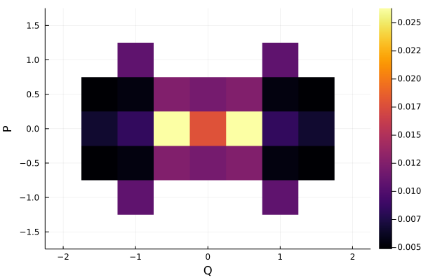
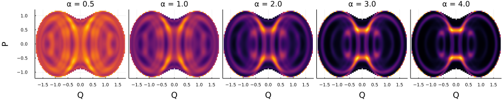
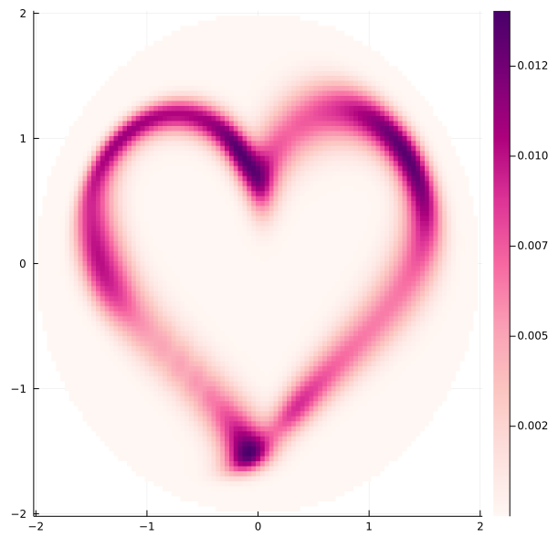
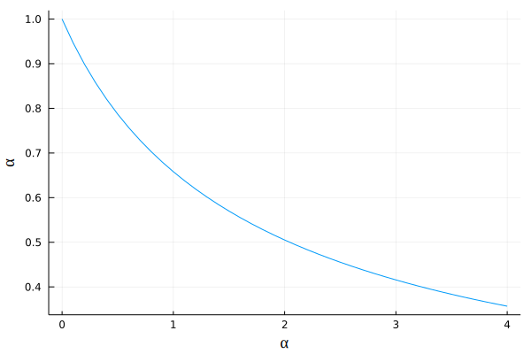

Examples for EnergyShellProjections
The module DickeModel.EnergyShellProjections allows to integrate functions in the classical energy shells of the Dicke model, and has specialized functions for projections of the Husimi function and its moments.
Projections of eigenstates
Let us first consider the projection
\[ \iint \text{d} q\text{d} p \,\delta(h_\text{cl}(Q,q,P,p)-\epsilon_k)\, \mathcal{Q}_{k}(Q,q,P,p)\]
of the Husimi function $\mathcal{Q}_{k}(\mathbf{x}) = \left | \left \langle \mathbf{x} \middle | E_k \right \rangle \right |^2$ of an eigenstate $\left | E_k \right \rangle$ into the atomic plane intersected with the energy shell at $\epsilon_k=E_k/j$ (see Ref. [14]). We will use the function EnergyShellProjections.proj_husimi_QP_matrix to compute such quantity. This function is optimized to parallelize using multiple workers if available, so let us load some as well. This is done using Distributed.
using DickeModel
using DickeModel.DickeBCE
using DickeModel.ClassicalDicke
using DickeModel.EnergyShellProjections
using Distributed
using Plots
j = 30
Nmax = 120
system = QuantumDickeSystem(ω=1.0, γ=1.0, ω₀=1.0, j=j, Nmax=Nmax)
eigenenergies,eigenstates = diagonalization(system)
ϵs=eigenenergies/j
addprocs(2) #we add 2 workers. Add as many as there are cores in your computer.
@everywhere using DickeModelThe function proj_husimi_QP_matrix will make use of all the available workers (you may disable this by passing parallelize = false)
The line
@everywhere using DickeModelis necessary to load the module DickeModel in all workers. You will get errors if you omit it.
We compute the projection for the eigenstate with k = 600.
k = 600
state = eigenstates[:,k]
ϵₖ = ϵs[k]
res = 0.02
heatmap(
EnergyShellProjections.proj_husimi_QP_matrix(system,
state,
ϵ = ϵₖ,
symmetricQP = true,
chop = 1e-2, # Here 1e-2 is enough, but see what works for you
res = res)...,
xlabel = "Q",
ylabel = "P")
Note that we set chop = 1e-2 above, which decreases computation time and practically does not affect the result. If you decrease chop in this example, computation time will increase but the plot will look the same. Always try to increase chop as much as your tolerance for numerical errors allows. See this example for details on chop.
Using the function proj_husimi_QP_matrix we can also plot the projection of the $\alpha$-moments of the Husimi function, which are given by
\[ \iint \text{d} q\text{d} p \,\delta(h_\text{cl}(\mathbf{x})-\epsilon_k)\, \mathcal{Q}_{k}(\mathbf{x})^\alpha.\]
for $\alpha\geq 0$. Let us do this for k = 750 and four values of $\alpha$, [0.5,1,2,3,4], which are passed to the keyword argument matrix_powers.
k = 750
state = eigenstates[:,k]
ϵₖ = ϵs[k]
powers = [0.5,1,2,3,4]
res = 0.04
Qs,Ps,matrices=EnergyShellProjections.proj_husimi_QP_matrix(system,
state,
ϵ = ϵₖ,
matrix_powers = powers,
symmetricQP = true,
chop = 1e-2,
res = res)
plot(
[heatmap(Qs,Ps,mat,
key = false,
xlabel = "Q",
ylabel = if α==powers[1] "P" else "" end,
yticks = α==powers[1],
left_margins = if α==powers[1] 20Plots.px else -5Plots.px end,
right_margins= -5Plots.px,
bottom_margins= 20Plots.px,
clim = (0,NaN),
title = "α = $α",
)
for (α,mat) in zip(powers,matrices)
]...,
layout=(1,length(powers)),
size=(1000,200),
titlefontsize=10,
tickfontsize=6,
)
The function proj_husimi_QP_matrix can also receive multiple states as columns in a matrix. Even more, if these states are just vectors of length 4 [Q,q,P,p], the function assumes you want the coherent state centered at [Q,q,P,p]. There is an analytical formula for the Husimi function of a coherent state (See husimi_of_coherent), so the coefficients of the coherent state are not even calculated, and the result is much faster:
ts = range(-π+0.3, -0.4, length = 30) ∪ range(0.2, π-0.6, length = 20)
💗(t) = (1.5sin(t)^3,(13cos(t) - 5cos(2t) -2cos(3t) - cos(4t))/10)
ϵ = 1
res = 0.04
coherents = hcat([Point(system,Q=Q,P=P,p=0,ϵ=ϵ) for (Q,P) in 💗.(ts)]...)
heatmap(EnergyShellProjections.proj_husimi_QP_matrix(system,coherents;
mix_states = true,
ϵ = ϵ,
res = res),
size = (600,600),
color= :RdPu_9)
Nota that above, we passed mix_states = true to proj_husimi_QP_matrix. This tells the code to average together all of the Husimi functions of the states (using Statistics.mean), that is, you compute the Husimi function of the mixed state. You may even pass a more complicated mix_function to add weights (see the documentation of rényi_occupation_and_proj_husimi_QP_matrix for details). If we had set mix_states = false (default), we would have obtained a matrix for each state.
The fact that proj_husimi_QP_matrix may return the projection of multiple states at the same time allows to create really nice animations. We evolve the state using DickeBCE.evolve.
ϵ = -0.5
x = Point(system, Q=1, P=1, p=0, ϵ=ϵ)
coherent_x = coherent_state(system,x)
ts = 0:0.1:20
res = 0.1
evolution = evolve(ts,coherent_x,eigenstates=eigenstates,eigenenergies=eigenenergies)
Qs,Ps,matrices=EnergyShellProjections.proj_husimi_QP_matrix(system,
evolution,
ϵ = ϵ,
res = res,
chop = 1e-2)
animation=@animate for mat in matrices
heatmap(Qs, Ps, mat,
color = cgrad(:gist_heat, rev=true), size=(600,600),
xlabel="Q", ylabel="P", key=false)
end
mp4(animation,
"animation_of_evolution_Husimi.mp4",
fps=15)If you want better resolution, you may decrease res above. Computation time grows as the inverse cube of res. For example, doubling the resolution will increase the computation time eightfold.
Rényi occupations of random states
In this example, we construct a set of random states from the Gaussian Orthogonal Ensemble (GOE) of Random Matrix Theory in the positive parity sector of the Dicke model using the function DickeBCE.random_state. Then we study average Rényi Occupation (see Refs. [15] and [20]) using EnergyShellProjections.rényi_occupation.
using DickeModel
using DickeModel.DickeBCE
using DickeModel.ClassicalDicke
using DickeModel.EnergyShellProjections
using LinearAlgebra
using Statistics
using Plots
j = 30
Nmax = 120
system = QuantumDickeSystem(ω₀=1, ω=1, γ=1, j=j, Nmax=Nmax)
eigenenergies,eigenstates = diagonalization(system)
ϵ = -0.5
n_of_states = 20
n_of_states = 2
r_states = random_state(system, n_of_states,
eigenenergies = eigenenergies,
eigenstates = eigenstates,
ϵ = ϵ, #center of gaussian envelope
σ = 0.5, #width of gaussian envelope
ensemble = :GOE, #could be :GUE, try it!
parity = +) #could be - or nothing, try it!
res = 0.05
res = 0.5
αs=0:0.1:4
𝔏αs = rényi_occupation(system,
r_states,
ϵ = ϵ,
symmetricQP = true, # in Q because defined parity, in P because GOE
res = res,
α = αs)
av_𝔏αs = [mean(𝔏α) for 𝔏α in 𝔏αs]
plot(αs,av_𝔏αs,
key = false,
ylabel = "⟨𝔏α⟩",
xlabel = "α",
guidefont = "times")
The form of this plot is precisely Eq. (18) of Ref. [15].
If you plan to compute both EnergyShellProjections.rényi_occupation and EnergyShellProjections.proj_husimi_QP_matrix, you should use the combined call EnergyShellProjections.rényi_occupation_and_proj_husimi_QP_matrix, which computes them both in the same routine and is faster than calling them separately.